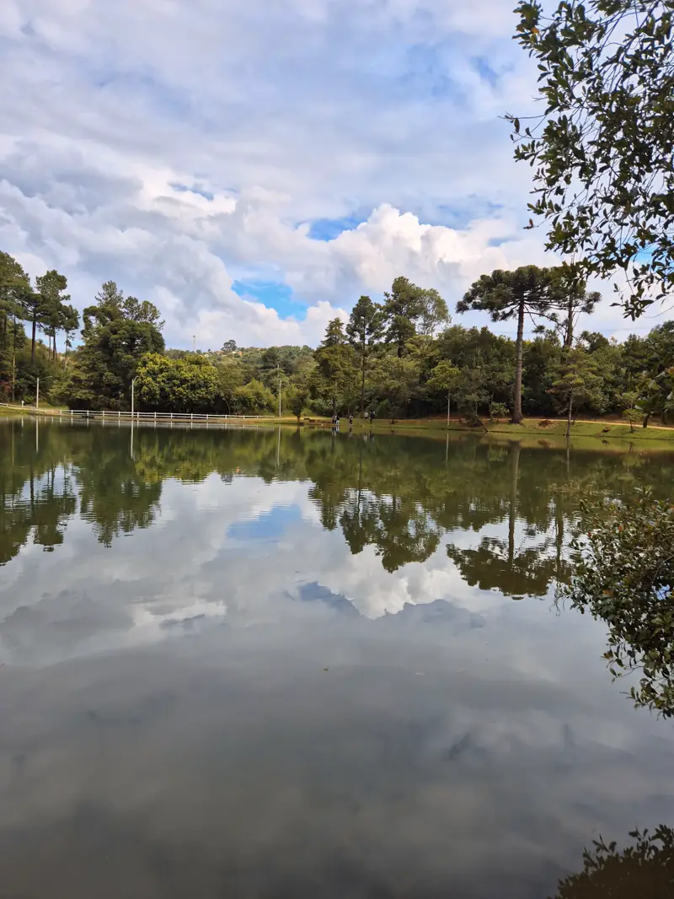
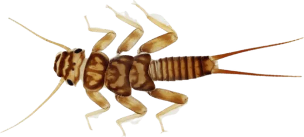
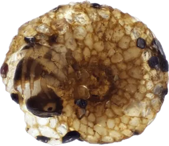
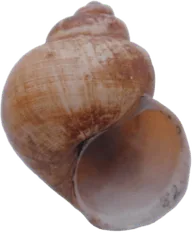
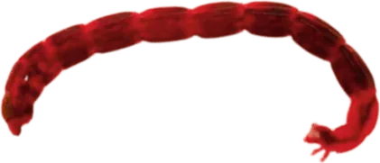
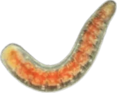
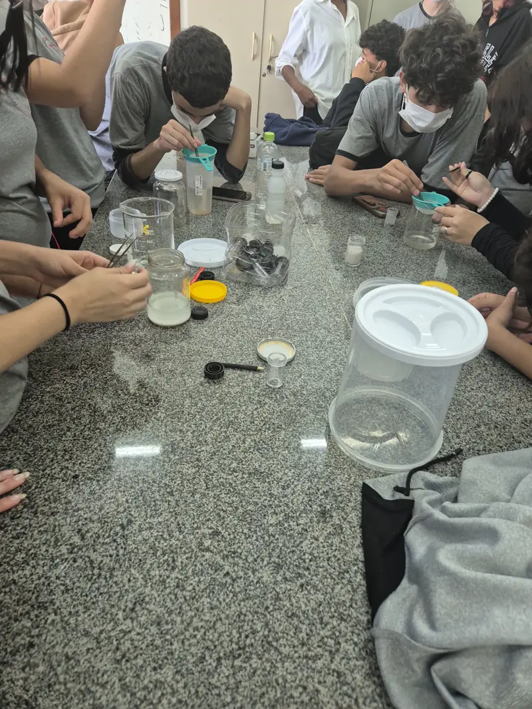
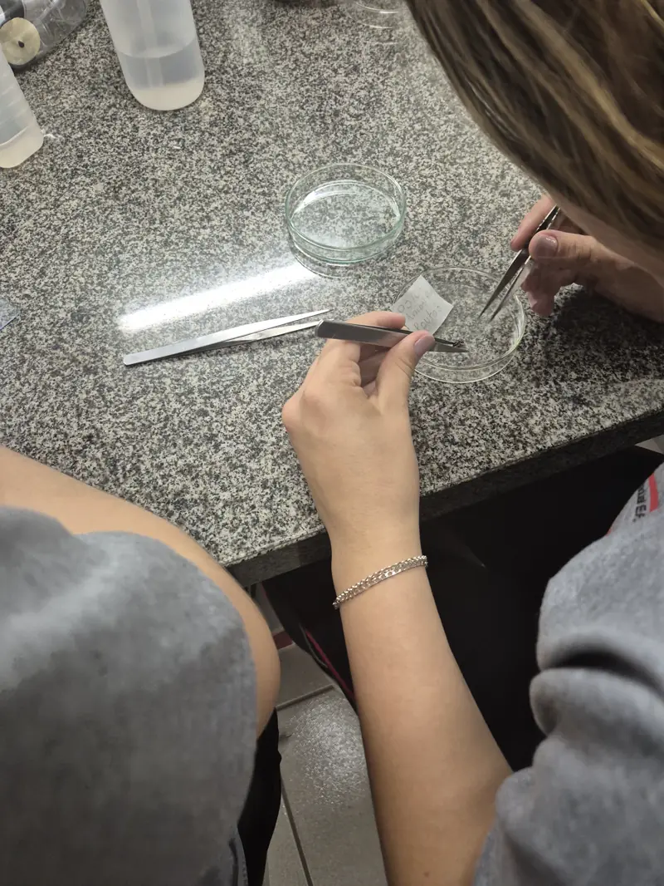

Descobrindo os Macroinvertebrados
Pequenos organismos com grande importância para os ecossistemas aquáticos.

O que são macroinvertebrados?
Os macroinvertebrados são animais invertebrados de tamanho relativamente grande (maiores que 500 micrômetros) que habitam principalmente sistemas de água doce. Estes organismos incluem insetos, crustáceos, moluscos e anélidos, entre outros.
Eles são fundamentais para os ecossistemas aquáticos, atuando como:
- Bioindicadores da qualidade da água
- Decompositores de matéria orgânica
- Fonte de alimento para peixes e outros animais
- Reguladores da produtividade primária

Principais grupos
Cada grupo reage de um jeito à poluição. No jogo, essa sensibilidade vira pontos: as famílias mais sensíveis valem 10, e as mais tolerantes valem 1.
- 10
- 8
- 7
- 6
- 5
- 4
- 3
- 2
- 1
Mais sensívelMais tolerante
-
10
Ephemeroptera
Efêmeras
Insetos sensíveis à poluição, indicadores de água limpa.
-
10
Plecoptera
Plecópteros

Muito sensíveis à contaminação, necessitam de água bem oxigenada.
-
10
Trichoptera
Tricópteros

Constroem casulos e são sensíveis à qualidade da água.
-
6
Mollusca
Moluscos

Caracóis e bivalves aquáticos, filtradores naturais.
-
2
Diptera
Dípteros

Geralmente tolerantes à poluição, abundantes em águas contaminadas.
-
1
Annelida
Anelídeos

Minhocas aquáticas, tolerantes a baixos níveis de oxigênio.
Importância ecológica
Biomonitoramento
Utilizados como indicadores biológicos para avaliar a qualidade da água e a saúde dos ecossistemas aquáticos.
Ciclagem de nutrientes
Participam ativamente na decomposição da matéria orgânica e na ciclagem de nutrientes nos ambientes aquáticos.
Cadeia alimentar
Constituem a base da cadeia alimentar aquática, servindo de alimento para peixes, anfíbios e aves.
Equilíbrio ecológico
Mantêm o equilíbrio dos ecossistemas aquáticos através do controle de algas e microrganismos.
Galeria de imagens



Descubra a vida nos riachos
Uma jornada científica para entender como pequenos organismos revelam a saúde dos nossos ecossistemas aquáticos.